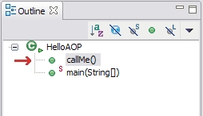

|  |
In order to apply your Interceptor to the callMe() method, we'll first need
to switch back to the HelloAOP.java editor. Once the editor is active, you
should be able to see the callMe() method in the Outline view (See figure).
Right click on this method, and click JBoss AOP > Apply Interceptor(s)... A dialog should open, with a list of available Interceptors. Click on HelloAOPInterceptor, and click "Finish". You should see in your Package Explorer that the file "jboss-aop.xml" now exists under your project root. |
| Contents | < Back | Next > |